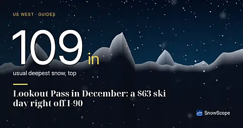
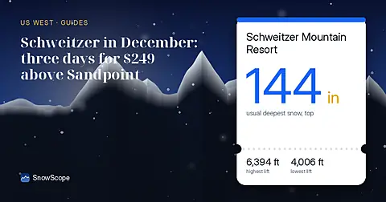
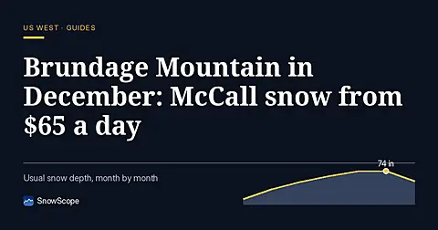
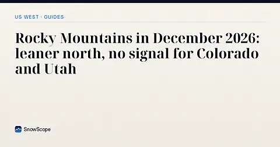
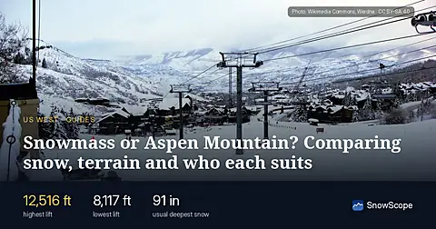

تقارير التلج · غرب ميريكان
تقارير يومية ديال التلج للي كيتزلجو: فين كاين التلج، شنو جاي، وفين تمشي تتزلج، من الخريطة ديال التلج ديال SnowScope ومحطات القياس. كل رقم جاي من المعطيات ديال داك النهار.

Beaver Mountain كيطبق ثمن واحد للكبار $75 للموسم 2026-27. التاريخ ديال التلج عندنا كيقول بلي بداية دجنبر هناك بزاف ديال الحظ؛ السيمانة اللي قبل Noël أكثر أمانة.

تيكي الكبار ديال Bridger Bowl لـ2026/27 هو 86 $ أونلاين، 99 $ فالكيشي. التاريخ ديالنا كيقول منتصف دجنبر عملية حظ فنص الجبل؛ آخر دجنبر أضمن.

Indy Base Pass ب419 $، Indy+ ب469 $، يومين فكل محطة منخرطة. قارناه بالأثمنة ديال النهار اللي تأكدنا منهم ف7 محطات Indy ف دجنبر، ومعاهم فرص التلج ديالهم.

التيكي ديال الكبار فـLookout Pass لـ2026-2027 هو 63 $ وسط السيمانة بالحجز، و75 $ فالويكاند. نص الجبل كان فيه 20 in (50 cm) حتى 15 دجنبر ف85 % ديال الشتوات اللي فاتو.

التيكي ديال الكبار ديال Montana Snowbowl لـ2026/27 هو 78 $ وسط السيمانة و85 $ فالويكاند. نص الجبل كان فيه 20 in (50 cm) حتى 15 دجنبر ف83 % ديال الشتوات اللي فاتو.


التيكيات ديال Sunlight كتبدا من 74 $ وSunny 6 Pack ثمنها 349 $ إلا شريتيها قبل 30 نوفمبر 2026. نص الجبل كان فيه 20 in (50 cm) حتى 15 دجنبر ف72 % ديال الشتوات.

فورفي النهار الكامل ف Timberline هو 129 $ فوقت العادي و161 $ فوقت الذروة؛ فورفي العشية هو 96 $ فوقت العادي. الوسط ديال الجبل كيبقى عادة عندو 52 in (132 cm) حتى ل15 دجنبر.

من Ski Cooper (49 $ فوسط السيمانة، 99 $ فالويكاند) حتى Mt. Baker (98.80 $ مقابل 115.42 $): فروقات الأثمنة ديال دجنبر اللي تأكدنا منهم فسبع محطات فالغرب الأمريكي، مع فرص التلج ديالهم.

3-Pack ديال Schweitzer لموسم 2026/2027 ثمنو 249 $، أي 83 $ فالنهار حسب حساب المحطة نفسها. القمة فالغالب كتحافظ على 54 in (138 cm) ديال التلج حتى 15 دجنبر.

Brighton من 72 $ مقابل Ski Cooper ب49 $ فوسط السيمانة وWolf Creek ب96 $: المحطات الرخاص ديال Utah وColorado مقارنين على 46 شتوة ديال التلج ف دجنبر.

التيكي اليومي ديال Brundage كيبدا من 65 $ فبعض الأيام؛ نص الجبل كان فيه 20 in (50 cm) ديال التلج ف15 دجنبر ف87 % ديال الشتوات اللي فاتو. كاين تواريخ ديال العطل خاص تتجنبها.

التيكي ديال النهار للكبار ف Snow King كيبدا من 100 $. حسب التاريخ ديال التلج عندنا، العلو ديال التلج فنص الجبل كان 20 in (50 cm) قبل 15 دجنبر ف 87% من الشتوات اللي فاتو: طريقة رخيصة باش تزلج فوادي Jackson.

Loveland كتبيع التيكي أونلاين بـ60 $ حتى 13 دجنبر 2026، ومن بعد بـ159 $ فالكيشي. واش العلو ديال التلج فبداية دجنبر كافي؟ 46 ديال الشتوات اللي فاتو كيجاوبو سيمانة بسيمانة.

التيكيات أونلاين ديال White Pass كيبداو من 69 $ فوسط السيمانة و89 $ فأيام الذروة، ووسط الجبل كان فيه 20 in (50 cm) ديال التلج نهار 15 دجنبر ف 87% من الشتوات اللي فاتو.

فـ Wolf Creek، التيكي ديال الكبار ثمنه $96 فالأيام العاديين و$110 فالأيام ديال الذروة لموسم 2026-2027؛ فـ نص الجبل كان كاين 34 in (87 cm) ديال التلج فـ 15 دجنبر نموذجي.

التيكي ديال النهار ف Brighton كيبدا ب 72 $ ل 2026/27 إلا شريتي بكري. العلو ديال التلج ف نص المحطة عادة كيكون 37 in (94 cm) نهار 15 دجنبر، مقابل 25 in (64 cm) ف Park City.

16 محطة ديال التزحلق فأمريكا رخاص، مرتبين على حساب فرص التلج ف دجنبر من 46 شتوة اللي فاتو، مع الأثمنة ديال النهار اللي تأكدنا منهم: من 49 $ فوسط السيمانة حتى 125 $ وأكثر.

ف الـ46 شتوة اللي فاتو عندنا، عند mid-mountain ديال Grand Targhee كان ديما عندها 20 in (50 cm) ولا كثر نهار 15 دجنبر. التيكي ديال نهار واحد أونلاين كيتراوح بين $125 و$180.

Mt. Baker ف دجنبر: 46 in (116 cm) ديال التلج ف وسط الجبل ف 15 دجنبر العادي، والتيكي من الاثنين للخميس بـ98.80 $، كيتباع غير نهار بنهاره فالكيشة.

عاصفة نهار 4 نونبر خلات بين 8 و 13 inches ديال التلج الجديد ف خمس محطات عاليين ف كولورادو قراب من Aspen. من بعد خمس أيام، النص منو مشى. شنو كيعني هادشي لنهارات البودرة.

فين دجنبر 2026 غيكون فيه التلج كثر ولا قل من مونتانا حتى لنيو مكسيكو: التوقع الموسمي الأوروبي والخريطة ديالنا، مع كولورادو ويوتا والروكي الشمالية.

Vail بالأرقام: القمة العادية تقريبا 64 in (162 cm) فالوسط ف 46 شتوة اللي فاتو، مارس أكثر شهر فيه التلج، مع البيستات، الطريق والسلامة.

Steamboat فـ Colorado للعائلات: شنو كيناسب الصغار بزاف، الدراري، المراهقين والواليدين، مع التلج ديال 46 شتوة اللي فاتو فتلاتة ديال العلوات.

كيفاش تدوز أول نهار ف Park City Mountain، Utah، وإمتى تمشي: التاريخ ديالنا كيعطي تقريبا 71 in (180 cm) فالقمة العادية فالوسط ف 46 شتوة اللي فاتو.

Mt Baker، Washington: تقريبا 133 in (337 cm) فالقمة العادية فالوسط ف 46 شتوة اللي فاتو، رقم قياسي عالمي ديال التلج، وماكاينش فين تبات فالجبل.

خطط ل Mammoth Mountain حسب الموسم: تقريبا 93 in (235 cm) فالقمة العادية فالوسط ف 46 شتوة اللي فاتو، مارس أكثر شهر، ربيع طويل وشتوات كتبدل.

الخرافات على Jackson Hole مقارنة مع الحقائق والتاريخ ديالنا: تقريبا 80 in (204 cm) فالقمة العادية فالوسط ف 46 شتوة اللي فاتو، بلا نقصة واضحة.

الوصول ل Telluride فالشتا، مطار بمطار: Telluride Regional، Montrose، الطريق 145 مع القانون ديال الجر ديال Colorado، والتيليكابين فابور حتى ل Mountain Village.

الوصول ل Snowbird فالشتا: طريق وحدة فالكانيون (SR-210)، قانون العجلات ديال Utah، الطوبيس ديال UTA والطريق من المطار ديال Salt Lake City.

بالطوموبيل ل Palisades Tahoe فالشتا: المسافات من Reno و Sacramento، السناسل R-1 حتى ل R-3 فكاليفورنيا، الباركينغ بالحجز، والطوبيس TART فابور.

Big Sky فـ Montana ساهلة تتخيلها: 5,850 acres تحت Lone Peak، وتلج تقريبا خمسة ديال المرات كثر قريب من القمة على التحت ف 46 شتوة اللي فاتو.

Aspen Snowmass مقارنة: Snowmass فيها تقريبا 75 in (190 cm) فالقمة العادية فالوسط ف 46 شتوة اللي فاتو، و Aspen Mountain تقريبا 69 in (174 cm).

تقريبا 109 in (276 cm) هي القمة العادية ديال Alta فالوسط ف 46 شتوة اللي فاتو. هنا: علاش السنوبورد كيبقى فالدار، أحسن الشهور وكيفاش تطلع الكانيون.